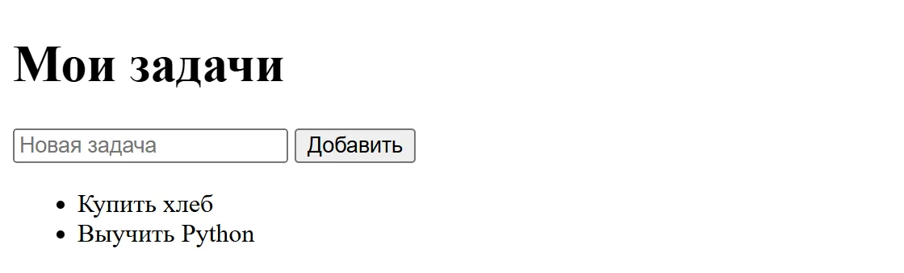
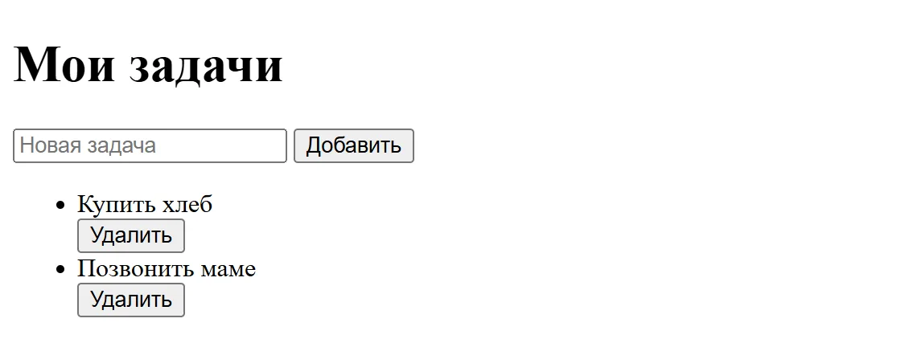
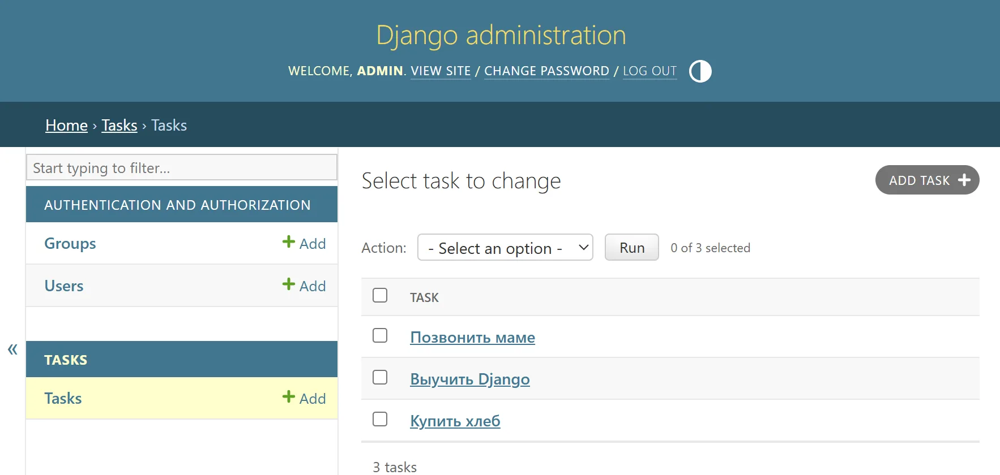
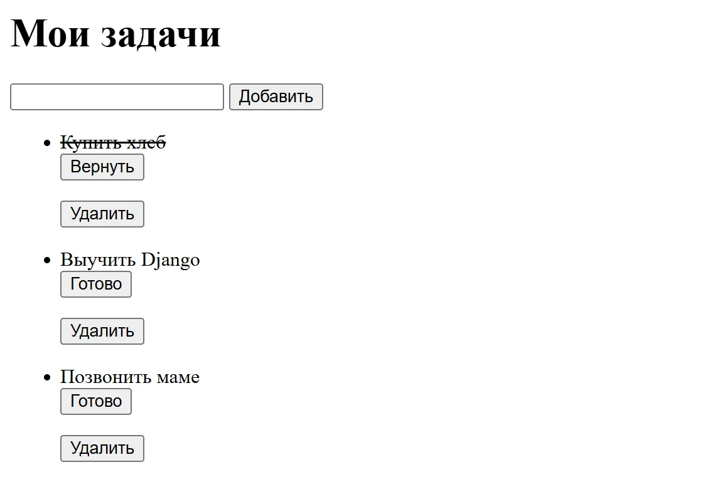

First project: a to-do list
We will build the same app — a to-do list — in two ways: with Flask and with Django. Pick one option and follow it to the end. Each has two parts: first the simplest list, then a database, deleting and a “done” mark. Flask takes about 30 minutes, Django about an hour.
Just starting out? First go through the “From scratch” lessons, and look up unfamiliar words in the glossary.
What you need
Check this before you start, and the steps will go without errors. Don't know how to install Python and open a terminal? First go through “Setting up your computer”.
- Python 3.12 or newer: the command
python --versionin the terminal. - A code editor, for example VS Code.
- A separate empty folder for the project, opened in the terminal.
- Basic Python: functions, lists, dictionaries (step 1 of the roadmap).
The commands are for Windows. On macOS and Linux type python3 instead of python, and activate the virtual environment with source .venv/bin/activate. Your ticked steps are saved in this browser, so you can come back later and continue. If something goes wrong, see the common errors at the bottom of the page.
Option 1. A to-do list with Flask
Flask 3.1, about 30 minutes. One app in one file: a page with the list and a form for adding a task.
0 of 6 steps done
-
Step 1. Create an environment and install Flask
A virtual environment keeps the project's libraries separate from the rest of the system. The commands differ slightly between Windows and macOS or Linux: choose your system, and the site will remember it.
Windows (PowerShell or Command Prompt)
Terminalpython -m venv .venv .venv\Scripts\activate pip install flaskmacOS and Linux (Terminal)
Terminalpython3 -m venv .venv source .venv/bin/activate pip install flask -
Step 2. Write the app
Create the file
app.py. For now the tasks are kept in an ordinary list, in the server's memory.app.pyfrom flask import Flask, redirect, render_template_string, request, url_for app = Flask(__name__) tasks = [] PAGE = """ <!doctype html> <title>Мои задачи</title> <h1>Мои задачи</h1> <form method="post"> <input name="title" placeholder="Новая задача" required> <button>Добавить</button> </form> <ul> {% for task in tasks %}<li>{{ task }}</li>{% endfor %} </ul> """ @app.route("/", methods=["GET", "POST"]) def index(): if request.method == "POST": title = request.form.get("title", "").strip() if title: tasks.append(title) return redirect(url_for("index")) return render_template_string(PAGE, tasks=tasks) -
Step 3. Start the server
The
--debugflag restarts the server every time you save the file and shows clear error messages.Terminalflask --app app run --debug -
Step 4. Check the result
Open
http://127.0.0.1:5000/in the browser and add a couple of tasks. Note that the list is cleared after the server restarts: the data lived only in memory. Keeping it between runs is what a database does, and that is the next step.What it should look like

Two tasks added through the form. There is no styling yet: this is plain HTML without CSS. -
Part 2. Database and deleting
Step 5. Store the tasks in SQLite
Replace the whole of
app.pywith this code. Thesqlite3module comes with Python, so there is nothing to install. The database filetasks.dbappears next toapp.pyon the first run. The?marks in the queries are parameters: Python inserts the values safely itself, so user input cannot change the SQL query. More in the “Databases” section.app.pyimport sqlite3 from pathlib import Path from flask import Flask, redirect, render_template_string, request, url_for app = Flask(__name__) DB = Path(__file__).with_name("tasks.db") PAGE = """ <!doctype html> <title>Мои задачи</title> <h1>Мои задачи</h1> <form method="post" action="{{ url_for('add') }}"> <input name="title" placeholder="Новая задача" required> <button>Добавить</button> </form> <ul> {% for task in tasks %} <li> {{ task["title"] }} <form method="post" action="{{ url_for('delete', task_id=task['id']) }}"> <button>Удалить</button> </form> </li> {% endfor %} </ul> """ def query(sql, params=()): conn = sqlite3.connect(DB) conn.row_factory = sqlite3.Row try: rows = conn.execute(sql, params).fetchall() conn.commit() return rows finally: conn.close() query("CREATE TABLE IF NOT EXISTS tasks (id INTEGER PRIMARY KEY, title TEXT NOT NULL)") @app.get("/") def index(): tasks = query("SELECT id, title FROM tasks ORDER BY id") return render_template_string(PAGE, tasks=tasks) @app.post("/add") def add(): title = request.form.get("title", "").strip() if title: query("INSERT INTO tasks (title) VALUES (?)", (title,)) return redirect(url_for("index")) @app.post("/delete/<int:task_id>") def delete(task_id): query("DELETE FROM tasks WHERE id = ?", (task_id,)) return redirect(url_for("index"))This same code will run right here: Python and Flask load into the browser (about 15 MB, only on the first click). Add and delete tasks in the window below, just like on your own computer.
-
Step 6. Check that the data is kept
Start the server with the same command, add a couple of tasks and delete one. Then stop the server (Ctrl + C) and start it again: the tasks are still there. Deleting is done with
POST, not an ordinary link: actions that change data must not run just because someone opened an address.The empty-task check lives in two places. The
requiredattribute stops an empty form in the browser, but a request can be sent without the form, so theaddfunction strips spaces itself and does not save an empty title. Protection against forged requests (CSRF), however, is missing from this example: for a real site add Flask-WTF, or build the project in Django, where it is on from the start.What it should look like

Three tasks added and one deleted. The list is the same after the server restarts.
What's next
- Move the HTML into a
templates/index.htmltemplate and userender_template. - Add a “done” mark: a
done INTEGER DEFAULT 0column and anUPDATEquery. - Put the app online: the guide is in the “Deployment” section.
Option 2. A to-do list with Django
Django 6.1, about 60 minutes. The tasks are stored in an SQLite database, and you can add them through the built-in admin panel.
0 of 10 steps done
-
Step 1. Install Django and create a project
The dot at the end of the command creates the project in the current folder. Then we create the
tasksapp.Windows (PowerShell or Command Prompt)
Terminalpython -m venv .venv .venv\Scripts\activate pip install django django-admin startproject mysite . python manage.py startapp tasksmacOS and Linux (Terminal)
Terminalpython3 -m venv .venv source .venv/bin/activate pip install django django-admin startproject mysite . python manage.py startapp tasks -
Step 2. Connect the app
In
mysite/settings.py, add the line'tasks',to the end of theINSTALLED_APPSlist.mysite/settings.pyINSTALLED_APPS = [ 'django.contrib.admin', 'django.contrib.auth', 'django.contrib.contenttypes', 'django.contrib.sessions', 'django.contrib.messages', 'django.contrib.staticfiles', 'tasks', ] -
Step 3. Describe the model and register it in the admin
A model is a database table described as a Python class. The ORM creates the SQL for it.
tasks/models.pyfrom django.db import models class Task(models.Model): title = models.CharField(max_length=200) done = models.BooleanField(default=False) def __str__(self): return self.titletasks/admin.pyfrom django.contrib import admin from .models import Task admin.site.register(Task) -
Step 4. Create the tables and an administrator
Migrations carry the models over into the database. The last command asks for a username and password for the admin.
Terminalpython manage.py makemigrations python manage.py migrate python manage.py createsuperuser -
Step 5. Make the list page
The view gets the tasks from the database, the template shows them as a list, and the route links the address to the view. Put the template in the
tasks/templates/tasks/folder, and Django will find it.tasks/views.pyfrom django.shortcuts import render from .models import Task def index(request): return render(request, "tasks/index.html", {"tasks": Task.objects.all()})tasks/templates/tasks/index.html<h1>Мои задачи</h1> <ul> {% for task in tasks %} <li>{{ task.title }}{% if task.done %} (готово){% endif %}</li> {% empty %} <li>Задач пока нет — добавьте их в админке.</li> {% endfor %} </ul>mysite/urls.pyfrom django.contrib import admin from django.urls import path from tasks import views urlpatterns = [ path("admin/", admin.site.urls), path("", views.index), ] -
Step 6. Run it and check
Open
http://127.0.0.1:8000/admin/, log in and add a few tasks. Then openhttp://127.0.0.1:8000/: the tasks appear in the list and stay after the server restarts.Terminalpython manage.py runserverWhat it should look like

The admin at /admin/: three tasks added with the Add task button. The LANGUAGE_CODE setting changes the admin's language. -
Part 2. Working without the admin
Step 7. Create a form
ModelFormbuilds a form straight from the model: it checks the title length and saves the task to the database itself. Create a new filetasks/forms.py.tasks/forms.pyfrom django import forms from .models import Task class TaskForm(forms.ModelForm): class Meta: model = Task fields = ["title"] -
Step 8. Add views and routes
Replace
tasks/views.pyandmysite/urls.pycompletely. The@require_POSTdecorator allows changing data only by submitting a form, not by following a link. Route names (name="index") let you refer to them from the template.tasks/views.pyfrom django.shortcuts import get_object_or_404, redirect, render from django.views.decorators.http import require_POST from .forms import TaskForm from .models import Task def index(request): if request.method == "POST": form = TaskForm(request.POST) if form.is_valid(): form.save() return redirect("index") else: form = TaskForm() return render(request, "tasks/index.html", {"tasks": Task.objects.all(), "form": form}) @require_POST def toggle(request, pk): task = get_object_or_404(Task, pk=pk) task.done = not task.done task.save() return redirect("index") @require_POST def delete(request, pk): get_object_or_404(Task, pk=pk).delete() return redirect("index")mysite/urls.pyfrom django.contrib import admin from django.urls import path from tasks import views urlpatterns = [ path("admin/", admin.site.urls), path("", views.index, name="index"), path("tasks/<int:pk>/toggle/", views.toggle, name="toggle"), path("tasks/<int:pk>/delete/", views.delete, name="delete"), ] -
Step 9. Update the template
The
{% csrf_token %}tag is required in every form withmethod="post": it protects against forged requests from other sites. Without it Django responds with error 403.tasks/templates/tasks/index.html<h1>Мои задачи</h1> <form method="post"> {% csrf_token %} {{ form.title }} <button>Добавить</button> {{ form.title.errors }} </form> <ul> {% for task in tasks %} <li> {% if task.done %}<s>{{ task.title }}</s>{% else %}{{ task.title }}{% endif %} <form method="post" action="{% url 'toggle' task.pk %}"> {% csrf_token %} <button>{% if task.done %}Вернуть{% else %}Готово{% endif %}</button> </form> <form method="post" action="{% url 'delete' task.pk %}"> {% csrf_token %} <button>Удалить</button> </form> </li> {% empty %} <li>Задач пока нет.</li> {% endfor %} </ul> -
Step 10. Check
Run
python manage.py runserverand openhttp://127.0.0.1:8000/. Add a task, mark it with the “Готово” button so it gets crossed out, then delete it. Try adding an empty task: the form shows an error and nothing reaches the database. No migrations are needed because the model has not changed.What it should look like

The first task was marked with the “Готово” button and is now crossed out.
What's next
- Show unfinished tasks first:
Task.objects.order_by("done", "-id"). - Work through the official Django tutorial: it continues the same logic with a polls example.
- Put the app online: the guide is in the “Deployment” section.
Common errors and how to fix them
The messages are shown as Windows, Flask and Django print them. Click an error to see the fix.
The python command opens the Microsoft Store or says “Python was not found”
Python was not found; run without arguments to install from the Microsoft Store… Python is not installed or not on PATH, so Windows shows its own stub. Install Python from python.org and tick “Add python.exe to PATH”. If Python is already installed, use the py command: py -m venv .venv. Once the environment is activated, the python command works.
PowerShell will not activate the environment: “running scripts is disabled”
…Activate.ps1 cannot be loaded because running scripts is disabled on this system. On Russian-language Windows the same error reads: Невозможно загрузить файл …\.venv\Scripts\Activate.ps1, так как выполнение сценариев отключено в этой системе. Allow local scripts for your account, once: Set-ExecutionPolicy -Scope CurrentUser RemoteSigned. Another option is to open Command Prompt (cmd) instead of PowerShell.
“flask” or “django-admin” is not recognized as the name of a cmdlet
flask : The term 'flask' is not recognized as the name of a cmdlet, function, script file, or operable program. The environment is not activated or the package is not installed. Activate the environment ((.venv) appears at the start of the terminal line) and run pip install flask or pip install django again.
Django: «no such table: tasks_task»
django.db.utils.OperationalError: no such table: tasks_task The table for the model has not been created yet. Do step 4: python manage.py makemigrations and python manage.py migrate. If the command says “No changes detected”, check that 'tasks' is in INSTALLED_APPS (step 2).
Django: «TemplateDoesNotExist at /»
TemplateDoesNotExist at / — tasks/index.html Django could not find the template. The path must be exactly tasks/templates/tasks/index.html: the tasks folder inside templates is repeated on purpose. Also check that the app is in INSTALLED_APPS.
Django: «Forbidden (403) CSRF verification failed»
Forbidden (403) CSRF verification failed. Request aborted. The form is missing the {% csrf_token %} tag. It is needed in every form with method="post": compare your template with step 9.
Sources
The code is written for Flask 3.1 and Django 6.1, sources checked on .
- Flask: installation and virtual environment
- Flask: Quickstart — routes, forms, templates
- Django 6.1: official tutorial, part 1 — project, app, routes
- Django 6.1: tutorial, part 2 — models, migrations, admin
- Django 6.1: ModelForm — forms based on models
- Django 6.1: CSRF protection — why csrf_token is needed
- Python: the sqlite3 module — query parameters and connecting
- Python: the venv module — virtual environments
Didn't work?
Describe the step where the error appeared through the feedback form, and compare with the sources above.